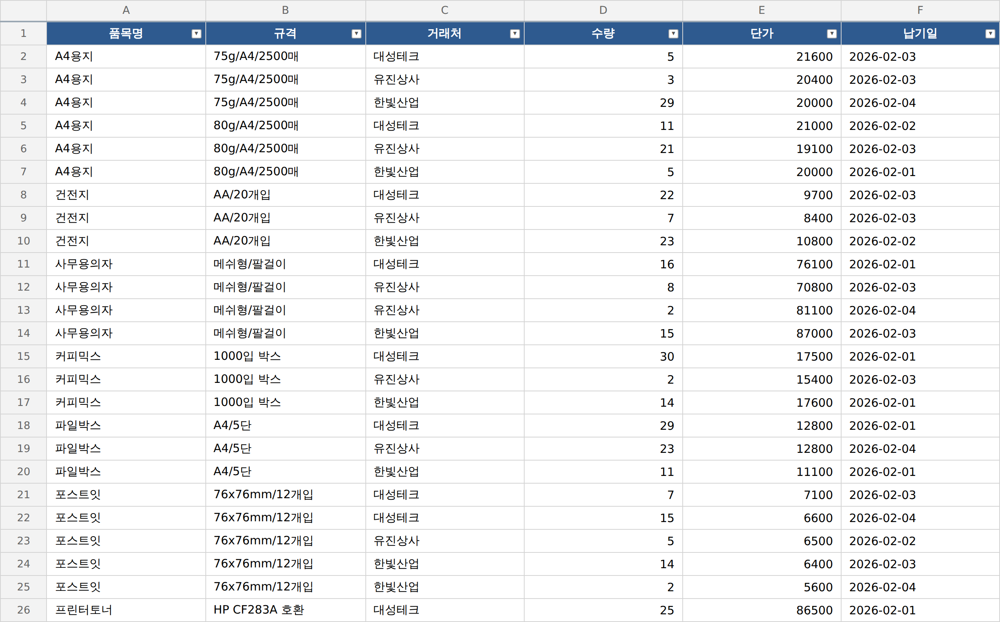

2 · 견적 통합에 응용¶
1단계에서 재사용 가능한 스킬이 만들어졌습니다. 그렇다면 다음으로는 비슷한 다른 업무에도 응용 가능한지 확인해볼 차례입니다.
견적 폴더를 열어 보면, 주문 파일과는 전혀 다릅니다. 열 이름은 품목명/규격/수량, item_name/spec/qty, 자재명/사양/개당단가로 회사마다 제멋대로이고, 금액과 날짜 형식도 제각각에 csv와 엑셀 파일이 섞여 있습니다. 여기에 새 지침을 쓰지 않고 1단계에서 저장한 데이터통합 스킬을 불러와 적용해봅니다.
한 가지 눈여겨볼 것이 있습니다. 스킬은 파일을 찾자마자 합쳐 버리지 않고 절차에 넣어 둔 대로 매핑표를 먼저 보여 주고 애매한 열은 멈춰서 물어봅니다. "이 delivery 열을 납기로 봐도 되나요?" 하고요. 열 하나를 잘못 짝지으면 견적 비교가 통째로 틀리기 때문에 확인받는 단계까지가 절차입니다.
통합이 끝났을 때 새 업무인데도 새로 배운 게 하나도 없다면, 그게 범용의 증명입니다.
견적은 '중복 제거' 대상이 아닙니다
주문에는 주문번호라는 고유키가 있어 겹치는 행을 합쳤지만 견적에는 그런 고유키가 없습니다. 오히려 같은 품목을 여러 거래처가 견적내는 것이 정상이고, 그게 비교의 핵심입니다. 그래서 견적은 모든 행을 남기고, 검산은 통합 행 수 = 세 파일 행 수 합(중복 제거 0)으로 확인합니다. 1단계에서 중복 제거를 조건부로 만들었다면 스킬이 알아서 이렇게 동작합니다.
직접 시켜보세요¶
저장한 스킬을 견적 폴더에 그대로 불러와 적용합니다. 통합 뒤에는 반드시 스스로 검산하게 합니다.
프롬프트에 꼭 담을 것 ✅¶
- 쓸 도구 — 새로 설명하지 말고 1단계에서 저장한
데이터통합스킬을 불러와 사용 (이름만 부르고 재료만 갈아 끼우는 게 스킬의 의미) - 대상 폴더 — 견적 3파일 전부(csv·xlsx 섞여 있어도)
- 열 매핑 확인 — 열 이름이 제각각이니, 매핑표를 먼저 보여주고 진행 (열 하나 잘못 짝지으면 견적 비교가 통째로 틀립니다)
- 같은 품목 모으기 — 같은 물품끼리 묶어 거래처별 단가를 비교할 수 있게
- 행 보존 검산 — 견적은 고유키가 없으니 중복 제거하지 말고, 통합 행 수 = 세 파일 행 수 합이 맞는지 확인
이런 건 빼세요 ❌¶
- 견적용으로 규칙을 처음부터 다시 설명하기 (스킬을 쓰는 의미가 없어짐)
- 매핑을 확인 없이 통째로 맡기기 (열 뜻을 넘겨짚습니다)
- 같은 품목을 중복으로 오인해 한 줄로 합치기 (거래처별 단가 비교가 사라집니다)
예시 프롬프트¶
여러분 문장을 먼저 보낸 뒤에 열어보세요.
1단계 대화에 이어서 보내면 됩니다. 새 대화를 열었더라도 스킬은 자동으로 인식됩니다.
이렇게 시킬 수 있습니다
아까 만든 데이터통합 스킬을 불러와서 lab7/2.견적통합 폴더의 견적 3파일을 하나의 비교표로 합쳐줘.
파일마다 열 이름이 다르니 표준 칸으로 어떻게 매핑할지 표로 먼저 보여주고, 확인받은 다음 진행해줘.
견적은 주문번호 같은 고유키가 없고 같은 품목이 거래처마다 나오는 게 정상이니 중복 제거하지 말고,
같은 품목끼리 모아 거래처별 단가를 비교할 수 있게 정리해줘.
결과는 lab7/2.견적통합 폴더에 견적비교표.xlsx 로 저장하고,
통합 행 수 = 세 파일 행 수 합이 맞는지 검산표로 보여줘.
완성 예시는 예시답안 폴더의 lab7/견적비교표.xlsx와 비교해 볼 수 있습니다.
실행 예시¶
이렇게 나오면 됩니다

체크포인트¶
- 새 지침 없이 1단계에서 저장한 스킬을 불러와 견적이 통합됐다
- 열 이름이 달라도 표준 칸으로 매핑돼 같은 품목이 모여 거래처별 단가가 비교된다
- 중복 제거 없이 모든 행이 보존됐고, 통합 행 수 = 세 파일 행 수 합으로 검산이 맞는다
마무리 · 동료에게 넘기기는 zip 하나면 끝¶
재사용의 마지막 갈래, 동료에게 공유하기는 방법이 허무할 만큼 간단합니다. .claude/skills/데이터통합/ 폴더를 그대로 zip으로 압축해 메신저로 보내면 끝입니다. 받은 동료는 자기 작업 폴더의 .claude/skills/에 풀기만 하면 30초 만에 같은 도구를 씁니다. 그 순간 내 도구가 팀의 도구가 됩니다.
여기까지가 이 과정의 마지막 조각입니다. 일을 잘 시키고 검산하는 법을 익혔고, 그 절차를 스킬로 굳혀 다른 업무에 돌려 봤고, 폴더 하나로 동료에게 넘길 수 있게 됐습니다. 반복되는 업무를 만나면, 시키기 전에 먼저 찾아보세요 — 누군가 이미 스킬로 적어뒀을 수 있습니다.